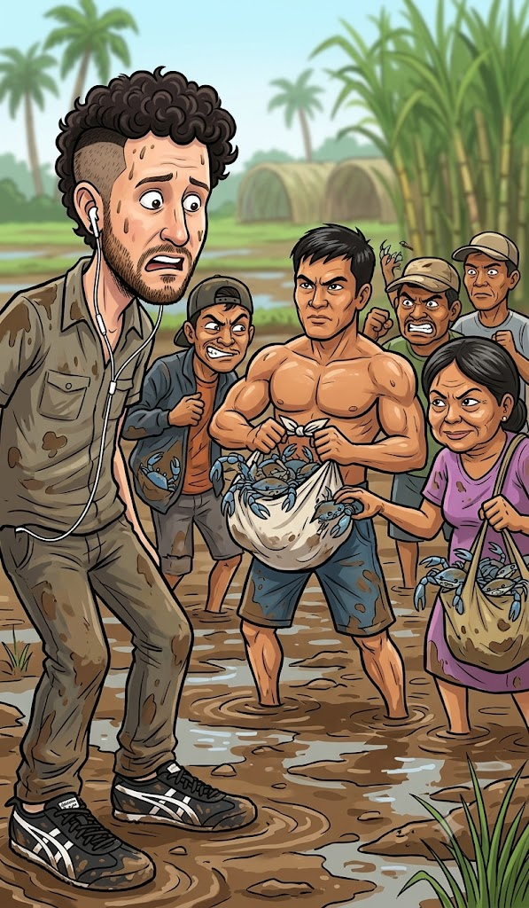

The Crabs Incident
Originally written July 13, 2010, 8:34 AM • Uploaded to Facebook on Jul 13, 2010, 8:34 AM

Today, as I was walking back from taking a piss far from the edge of the fields, I spotted an engine-powered tricycle approaching down the plantation lane. I had put on my iPod earbuds, using the music as a familiar way of balancing what I don't fully understand in this environment against what I do. With the tracks humming in one ear, I paced along the dirt. The driver glanced at me with a half-sneer as he rolled past—a standard, common procedure out here on the roads. So, naturally, I sneered right back at him.
When we are out working the sectors, the atmosphere is mostly dead silent, save for the rhythmic metallic clash and slide of our iron tools hitting the weeds. Because of that heavy quiet, we notice absolutely every motorized vehicle that traverses the grid. As the tricycle cruised past my position, I noticed it click down its gears and drop to a sudden halt just a few meters ahead of me. Caught off guard by the abrupt stop, my brain immediately assumed this might be the end of me, and I decisively gripped the handle of my iron weeding hoe, bracing for an interrogation.
Instead, one of the field hands I work alongside, Elvis, broke from the row, approached the idling driver, and asked him a brief question. The driver nodded towards the back of his rig, where two massive industrial metal pails lay strapped to the chassis. Elvis confidently unlatched one of the heavy pails and began hoisting it away from the tricycle. Peering inside as he walked back toward our sector, I saw that the container was completely packed to the brim with brilliant, blue-colored wild crabs. Hundreds of them, writhing in a blue mass.
Suddenly, without warning, Elvis completely overturns the massive pail and dumps the entire haul right onto the hard dirt of the path. For a stunned split second, I genuinely thought he had lost his mind. A few of the crabs immediately scrambled to their feet, darting sideways toward the grass, though the vast majority just lay there in a confused heap—vividly blue against the dry soil.
Then, as if a birthday piñata had just been violently cracked open over the asphalt, the field crew dropped their hoes and rushed the pile, grabbing hold of the crabs as if they were falling candy. Armed with nothing but bare hands and a lot of raw determination, they began aggressively hoarding the livestock. Four of the field hands in particular worked with lightning speed, snatching up as many claws as they could manage. Elvis rapidly constructed his own localized pile on the dirt, while another man ripped off his heavy work jacket, flung it flat onto the path, and began piling the crabs directly onto the fabric. A woman produced an empty plastic sack from her belt, sliding a handful into the lining. Elvis, running out of floor space for his catch, decided to completely pull off his own work shirt, tying the sleeves together to create an impromptu canvas sack.
The resulting scene on the road was completely surreal: Elvis was standing there entirely shirtless, another man had his fingers overflowing with snapping blue legs, the lady was frantically reaching down to stealthily pinch a few stray crabs from Elvis's personal pile, and the secondary man was desperately tying the corners of his jacket together into a knot. I stood there completely perplexed, having absolutely no idea what had just occurred, or why the merchant on the tricycle had casually dropped off a premium haul of fresh seafood without demanding a single cent of paper currency.
We eventually returned to the rows to resume the weeding, while our foreman—or the *overseer*, as they formally call him out here—just stood on the path slowly shaking his head in mild amusement. As we swung our blades against the weeds, I tracked the unique adjustments everyone had made to transport their lunch. One of the men had tied his shirt into a tight, bouncing pouch hanging right over his stomach; the guy with the coat had successfully slung his bundle across his torso like a heavy bandolier; the woman was proudly displaying her specific catch to her neighbors; and Elvis had magically produced an auxiliary plastic sack from somewhere on his frame. As we hammered through the heavy brush of a massive field, Elvis paced along his row, carrying his shifting bag in one hand while constantly eyeing it to ensure no one would sneak close to touch his crabs. Everyone else on the line was back to hard labor, and within minutes, no one else seemed to notice the blue claws clicking inside the shirts.